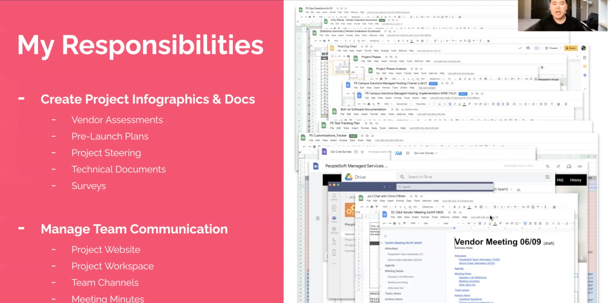
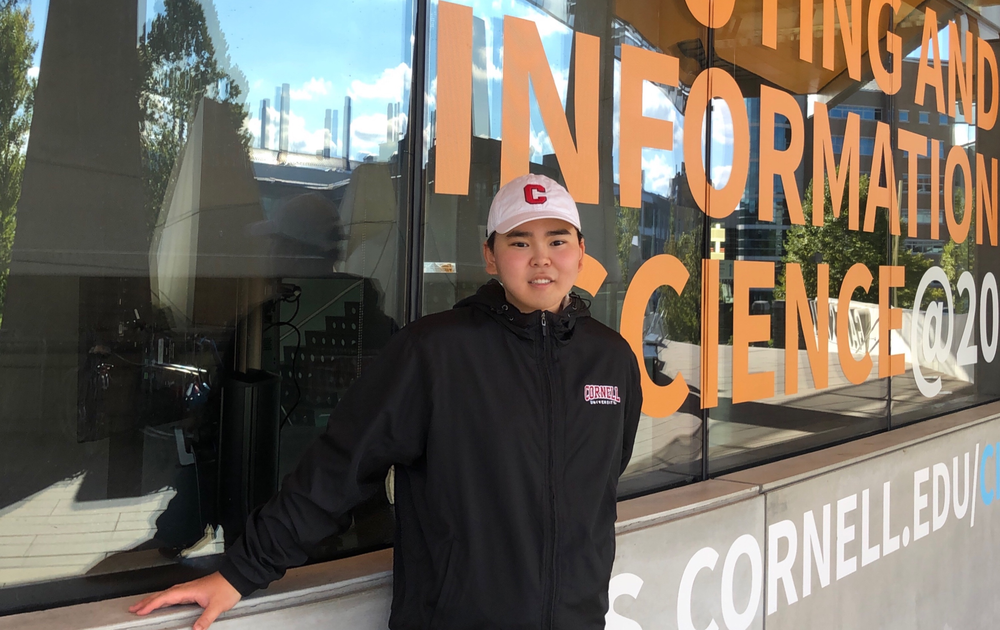
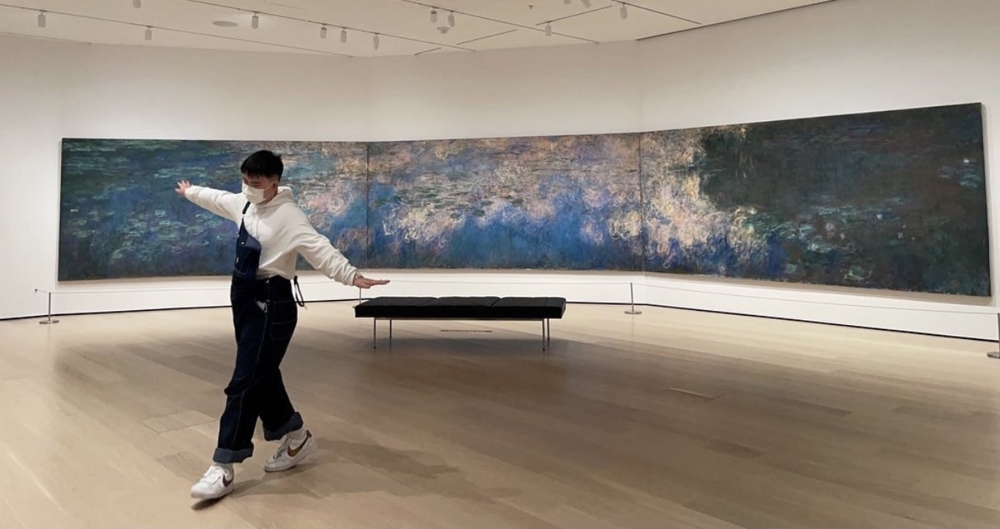
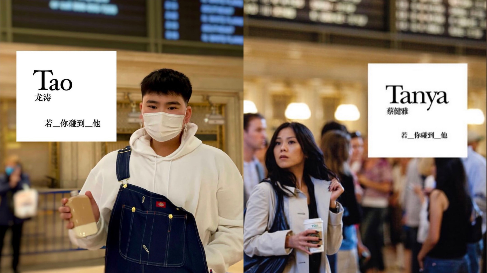
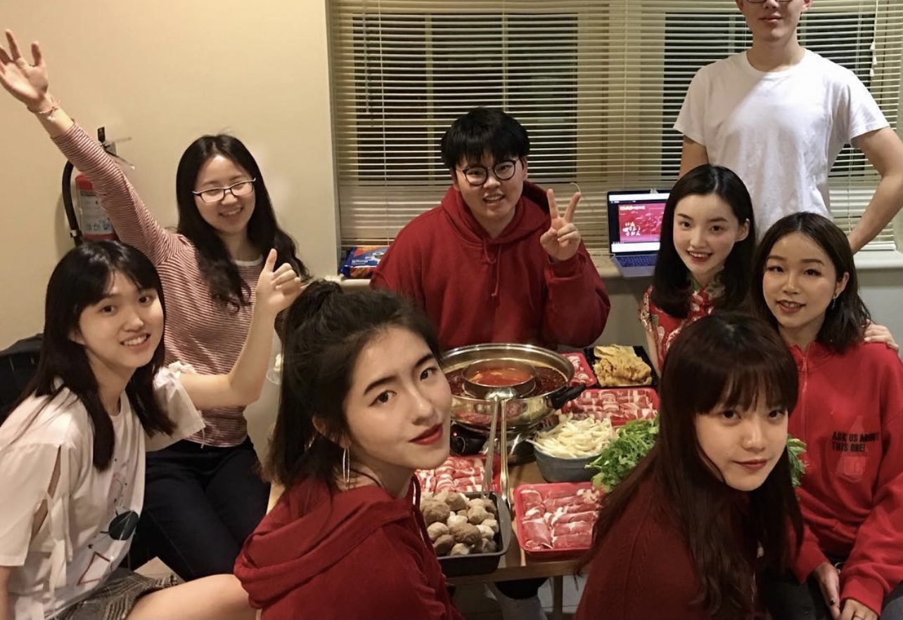

Tao Long is a college senior studying Information Science and Communication at Cornell University.
Advised by
Dr. François Guimbretière
and
Dr. Katherine Sender,
Supporting users' online behaviors and interactions in a scalable and accessible way, Tao's works falls into the beautiful field of Human-Computer Interaction(HCI).
Through a human-centered lens, Tao’s research aims to understand how to design and build
(computer-mediated / AI-mediated / XR-mediated) technical and social supports for collaborative
environments and marginalized communities. Please go to the Projects sections to see Tao's works.
Bio
I am a...

I am a researcher.

I am a product manager.

I am a full stack developer.

I am a social impact enthusiast.

I am a kpop cover dancer.

I am a Tanya Chua's big fan.
I am a Cornellian.
I am a global citizen.

I am a hotpot lover.
I am a...
I am a researcher.
I am a product manager.
I am a full stack developer.
I am a ux designer.
I am a teaching assistant.
I am a social impact enthusiast.
I am a kpop lover.
I am a tanya chua's big fan.
I am a cornellian.
I am a demon deacon.
I am a shenzhener.
I am a global citizen.
I am a hotpot lover.